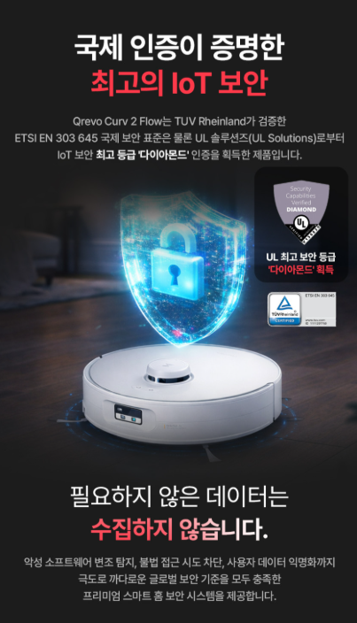
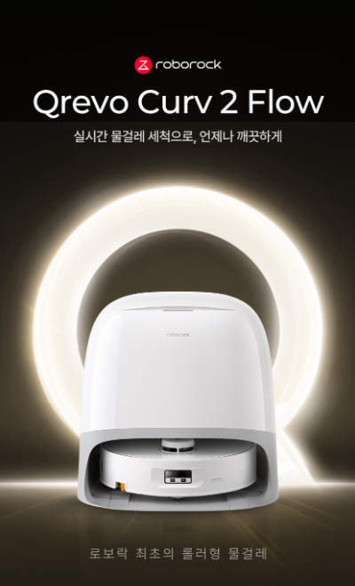

1. 로보락 Qrevo Curv 2 Flow는 어떤 제품일까?
로보락 Qrevo Curv 2 Flow는 로봇청소기의 흡입 청소와 물걸레 청소를 함께 사용할 수 있도록 설계된 제품입니다. 특히 청소 중에도 롤러에 깨끗한 물을 공급하고 사용한 물을 분리하는 SpiraFlow 실시간 자동 세척 롤러 물걸레 시스템이 핵심 특징입니다. 구매 전에는 집안의 바닥 재질과 카펫 사용 여부, 도크 설치 공간, 물걸레와 먼지통 관리 방법을 함께 확인하는 것이 좋습니다.
2. SpiraFlow 실시간 자동 세척 롤러 물걸레
로보락 Qrevo Curv 2 Flow의 가장 큰 특징 중 하나는 청소 중에도 롤러를 세척하는 SpiraFlow 실시간 자동 세척 물걸레 시스템입니다. 깨끗한 물을 롤러에 지속적으로 공급하고 사용한 오염수는 즉시 분리 배출하는 구조로, 물걸레가 오염된 상태로 바닥을 계속 닦는 상황을 줄이는 데 초점을 맞췄습니다. 물걸레 청소를 자주 하는 가정이라면 이런 실시간 세척 방식이 제품 선택에서 중요한 부분이 될 수 있습니다. :contentReference[oaicite:1]{index=1}

3. 20,000Pa HyperForce 흡입력
Qrevo Curv 2 Flow는 최대 20,000Pa의 HyperForce 흡입력을 갖춘 로봇청소기입니다. 바닥 틈새나 카펫에 남은 먼지처럼 일반적인 청소에서 놓치기 쉬운 이물질을 흡입하는 데 활용할 수 있습니다. 또한 DuoDivide 메인 브러시와 듀얼 리프팅 아크 사이드 브러시를 적용한 듀얼 엉킴 방지 시스템으로 머리카락이나 반려동물 털로 인한 브러시 관리 부담을 줄이는 데 초점을 맞췄습니다. :contentReference[oaicite:2]{index=2}
4. 270mm 초광폭 롤러와 물걸레 압력
270mm 초광폭 롤러는 한 번 이동할 때 더 넓은 바닥 면적을 청소할 수 있도록 설계됐습니다. 넓은 거실이나 긴 복도처럼 바닥 면적이 넓은 공간에서 이동 횟수를 줄이는 데 도움을 줄 수 있습니다. 또한 220RPM으로 회전하는 롤러와 기존 대비 2.5배 강화된 물걸레 압력을 적용해 바닥에 남은 젖은 오염이나 얼룩을 관리하는 데 초점을 맞췄습니다. :contentReference[oaicite:3]{index=3}

5. 카펫 자동 리프팅과 롤러 쉴드
카펫이 있는 집에서는 물걸레가 카펫에 닿는 것을 어떻게 막는지가 중요합니다. Qrevo Curv 2 Flow는 카펫에 접근하면 롤러를 최대 15mm까지 자동으로 들어 올리고 롤러 쉴드를 전개해 습기와 먼지가 카펫 쪽으로 전달되는 것을 막도록 설계됐습니다. 카펫이 설치된 공간에서 사용할 예정이라면 실제 집의 카펫 높이와 청소 설정을 함께 확인하는 것이 좋습니다. :contentReference[oaicite:4]{index=4}
6. Edge-Adaptive 롤러로 가장자리 청소
벽면이나 가구 모서리는 로봇청소기로 청소하기 어려운 구간입니다. Qrevo Curv 2 Flow는 Edge-Adaptive 롤러 물걸레를 적용해 벽면과 가구 가장자리에 밀착하면서 물걸레 청소 범위를 넓히는 구조를 사용합니다. 공식 안내에 따르면 가장자리에서 약 10mm 이내까지 밀착하도록 설계되어 있어 바닥 가장자리 청소를 중요하게 생각한다면 확인해볼 만한 기능입니다. :contentReference[oaicite:5]{index=5}
7. 다기능 도크와 자동 관리
로봇청소기는 본체의 청소 성능뿐 아니라 청소가 끝난 뒤 얼마나 편하게 관리할 수 있는지도 중요합니다. Qrevo Curv 2 Flow의 다기능 도크에서는 롤러 물걸레 세척과 고온 건조가 진행되며, 자동 먼지 비움 기능도 지원합니다. 공식 제품 안내에서는 물걸레 세척에 최대 75℃의 고온을 사용하는 것으로 안내하고 있습니다. 실제 사용 환경에서는 정수통과 오수통의 관리 주기, 도크 주변 공간까지 함께 확인하는 것이 좋습니다. :contentReference[oaicite:6]{index=6}
8. 구매 전 체크리스트
- 정확한 Qrevo Curv 2 Flow 모델과 판매 옵션을 확인합니다.
- 20,000Pa 흡입력과 물걸레 기능이 필요한 사용 환경인지 확인합니다.
- 집에 카펫이 있다면 자동 리프팅과 롤러 쉴드 기능을 확인합니다.
- 도크를 설치할 위치와 주변 여유 공간을 확인합니다.
- 정수통과 오수통의 관리 방법을 확인합니다.
- 롤러, 브러시 등 소모품의 교체 및 관리 방법을 확인합니다.
- 배송, 교환, 반품과 보증 조건을 확인합니다.
싸게살래 가전·디지털 목록에서 다양한 제품 구매 가이드를 확인할 수 있습니다.
가전·디지털 전체 상품 보기 →자주 묻는 질문
Qrevo Curv 2 Flow의 가장 큰 특징은 무엇인가요?
청소 중 롤러를 실시간으로 세척하는 SpiraFlow 물걸레 시스템이 대표적인 특징입니다. 깨끗한 물을 공급하고 오염수를 분리하는 방식으로 물걸레 청소를 자동화했습니다.
카펫에서도 사용할 수 있나요?
카펫에 접근하면 롤러를 최대 15mm까지 자동으로 리프팅하고 롤러 쉴드를 전개하는 구조를 지원합니다. 실제 카펫 종류와 높이에 따라 청소 설정을 확인하는 것이 좋습니다.
물걸레를 직접 세척해야 하나요?
다기능 도크에서 롤러 물걸레 세척과 건조가 자동으로 진행됩니다. 다만 정수통과 오수통, 롤러와 도크 내부 등의 정기적인 관리는 필요합니다.
20,000Pa 흡입력이 꼭 필요한가요?
흡입력은 로봇청소기의 여러 성능 요소 중 하나입니다. 바닥 틈새나 카펫의 먼지, 반려동물 털 등을 적극적으로 관리하려는 경우에는 높은 흡입력이 장점이 될 수 있지만 집의 바닥 환경과 청소 빈도를 함께 고려하는 것이 좋습니다.